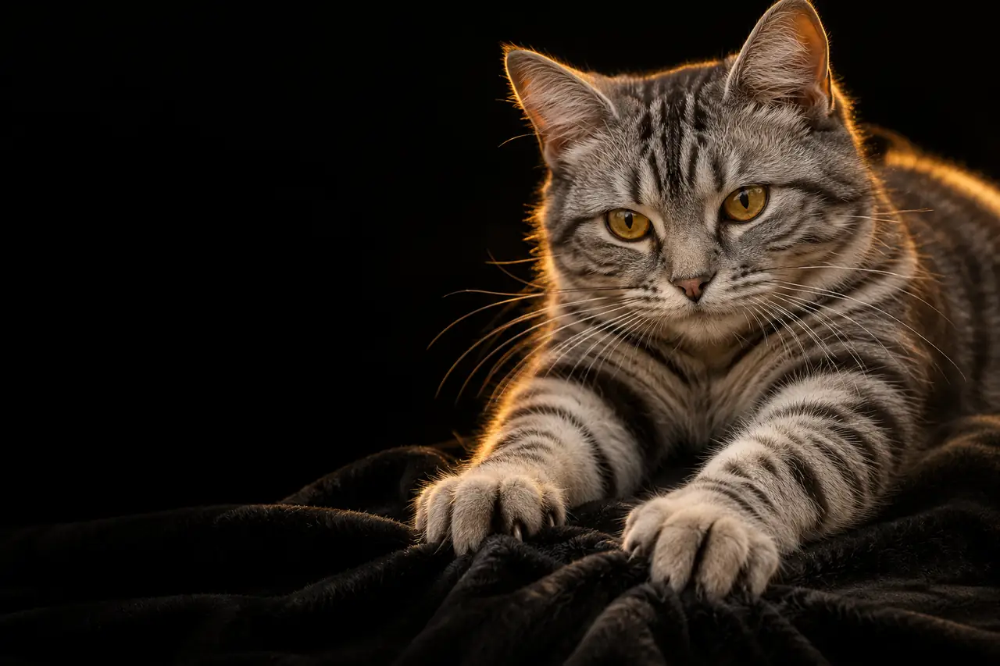
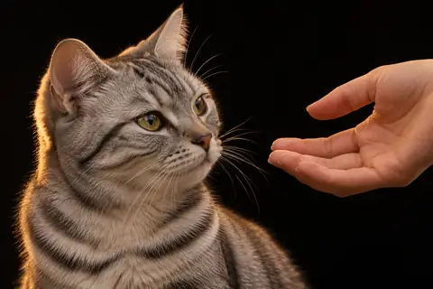
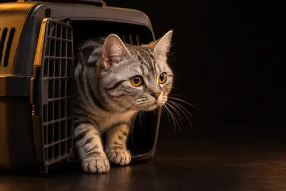

Mój człowiek.
Przypadek do opisania.
Myśli, że to on mnie wychowuje. Pozwalam mu w to wierzyć. Rozgość się — opowiem Ci o naszym życiu i wyjaśnię, co naprawdę może kryć się za kocimi zwyczajami.
Otwórz mój notatnik ↓Każdy zwyczaj ma swoją historię.
Mój człowiek jest moim niewolnikiem. I jeszcze za to płaci.
Przyjąłem go bez doświadczenia, za to z przeciwstawnymi kciukami. W tej branży otwieranie saszetek liczy się bardziej niż dyplom.
Otworzyłem piekarnię. Na Twoich kolanach.
Człowiek usiadł, więc wziąłem się do pracy. Dlaczego ugniatam łapkami i co zrobić z pazurkami? Już tłumaczę.

Trzy głaskania za daleko.
Przyszedłem po czułość. Człowiek dopisał do tego własny regulamin. Opowieść o zębach, granicach i sygnałach, które łatwo przeoczyć.

Nowy dom. Obsługa do przeszkolenia.
Za drzwiami transportera czekał człowiek. Sprawdziłem, czy przygotował dom, czy tylko kupił poduszki. Oto moja lista.
Kot pisze. Człowiek przewraca strony.
Mam cztery łapy, własne zdanie i człowieka, który wciąż się uczy. W tym notatniku opowiadam o naszym wspólnym życiu: trochę z niego żartuję, trochę tłumaczę kocie sprawy. Każda historia prowadzi do konkretnych odpowiedzi, żeby po ostatnim zdaniu łatwiej było nam się dogadać.
Moje przygody są literacką fikcją. Porady mają źródła, a sprawy zdrowotne należą do lekarza weterynarii.